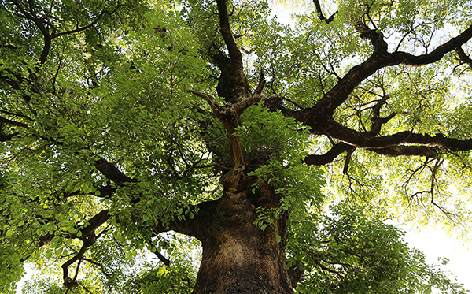

護樹協會源起
為什麼會有台灣護樹協會?
這樣問之前，可以先反思一個問題，樹木對我們來說是什麼?
是生存氧氣的提供者、是讓我們賞心悅目的自然藝術品、是維持地球溫度的衛兵、是默默把所有最好的東西不留餘地送給給所有生物的偉大植物。
從人類存在以來，就依附在樹木之下生活，沒有樹木的話，我們又怎麼燃起火焰? 又怎麼蓋起房子?
一切的起始點，就在2012年的夏天。
台中市東興路上的一排綠樹被殘忍地攔腰砍伐。護樹協會的創辦人，張美惠小姐目睹人類以殘暴的姿態對待與人和平共處、毫無反擊餘地的樹木。
樹木殘缺的軀幹及滿地的枝葉像是一地的血淚，他們站在原地像是失去家園的孩子般無助又無聲地哭泣著。
這樣的景象讓她震驚，也讓她疑惑，為什麼我們要與樹木為敵?
竭澤而漁式的砍伐政策和盜伐已經造成土地巨大的傷害和創痛。而城市樹木處處可見的斷頭行型式的修剪，大型開發案下手不留情的砍除，已經造成了空氣污染，生存空間緊促，影響的不只是鳥兒無處可棲，更是人文素質低落的關鍵與本土文化嚴重的創痛。
是時候爭取台灣的樹木生存權了。樹木的生命也延續著人們的生命，保護樹木也是保護自己。
台灣護樹協會由此誕生。